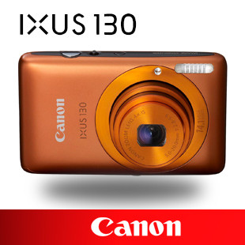

|  | 产品名称：佳能 IXUS 130
佳能 IXUS 130（官方标配） 松下原装SD卡2G（高速正品） 佳能IXUS系列专用皮包 索尼2.7英寸LCD保护贴（防刮/高透光/静电吸附) 摄影指南 |
| 主要参数 | |
型号: PMP169B
内存容量: 512M
屏幕尺寸: 2.12英寸（最佳视觉比列16：9的宽屏）
屏幕特性: LTPS TFT (720x240)
视频功能: 支持ASF格式的MPG4,或通过软件转换成ASF播放,播放效果:320×420, 30fps/视频输出,输入/电视节目定时录制。
|
|
| 功能参数 | |
音频功能: 支持音频格式:MP3,WMA,WAV/内置麦克风,支持LINEIN寻录/收音功能/内置喇叭
录音格式: 44.1KHz, 128 Kbps, MP3, 支持MIC/LINE-IN直录
附加功能: 支持图片格式:JPEG(EXIF2.1)/电子书浏览/多语言(中/英)设置
|
|
| 其它参数 | |
接口: USB接口,AV OUT接口, AV IN接口
扩展卡: 可扩充2G SD,MMC卡
电池: 内置锂电池
尺寸: 105.2 x47.6x15.6mm
重量: 90g
|
|